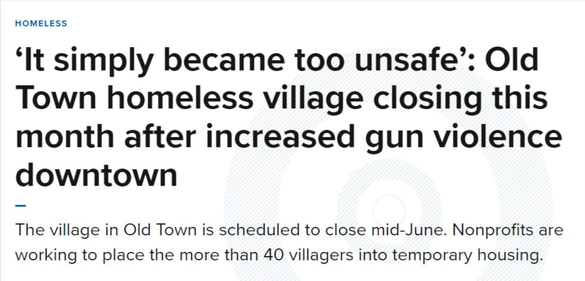

Timeline photos
It looks like they are closing this village in Portland Oregon because there is too much gun violence in the area. It's not safe enough even for homeless people. They tried to find some group to take it over. But none stepped up. I WOULD HAVE LOVED TO RUN THAT PLACE.
But instead, I have to fight @[100064805494040:2048:City of Akron, Ohio - Mayor's Office], Dan Horrigan, to shelter one person on my private property.
In Akron, it's the mayor that is too damn dangerous for our homeless people.